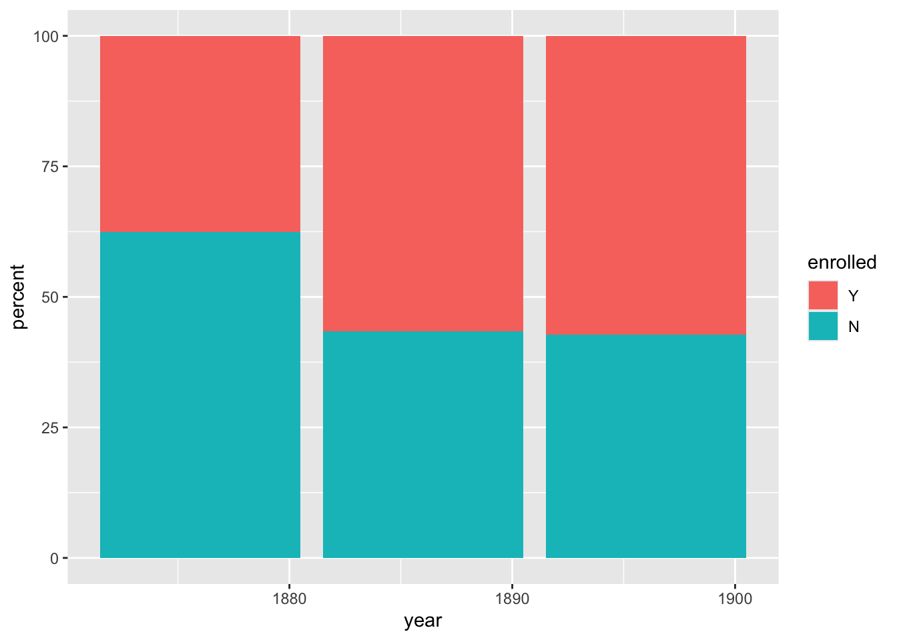
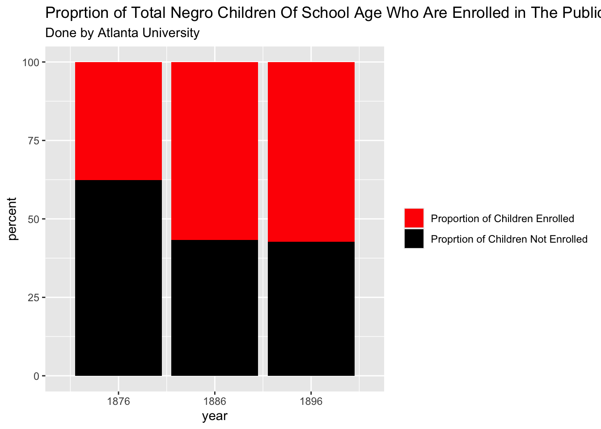
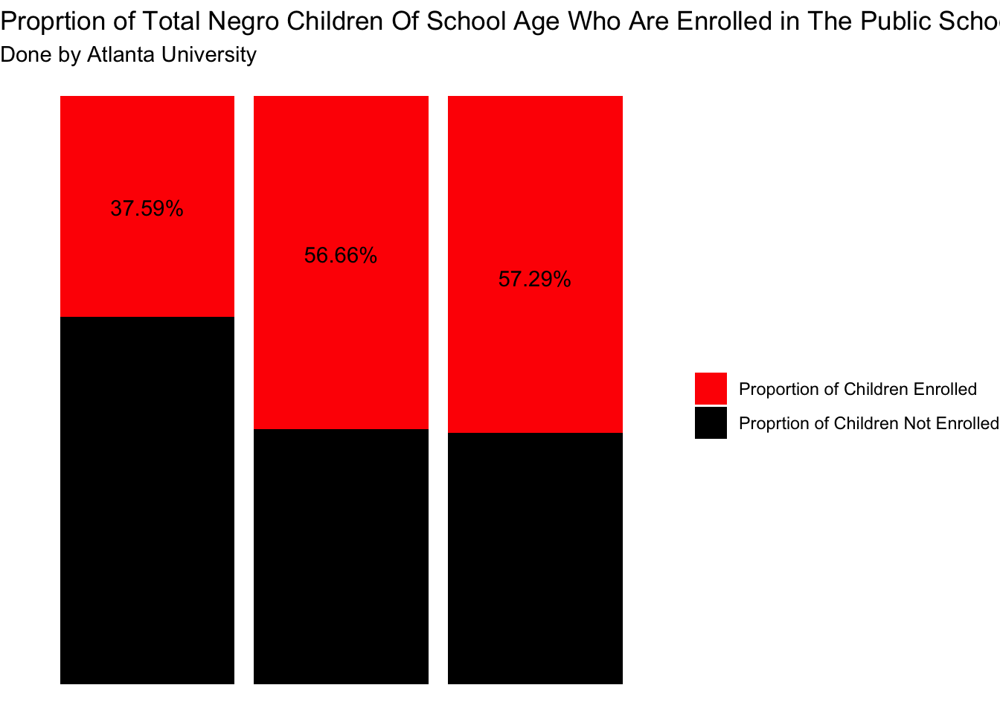
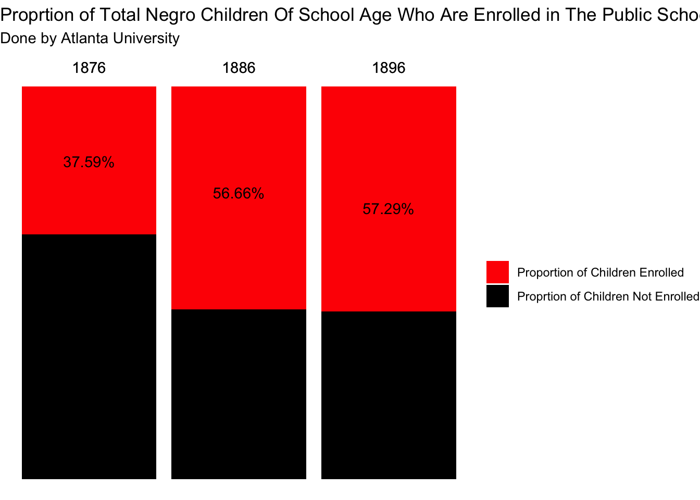
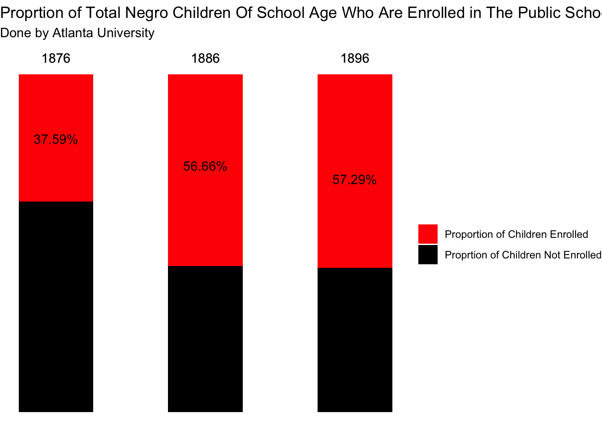
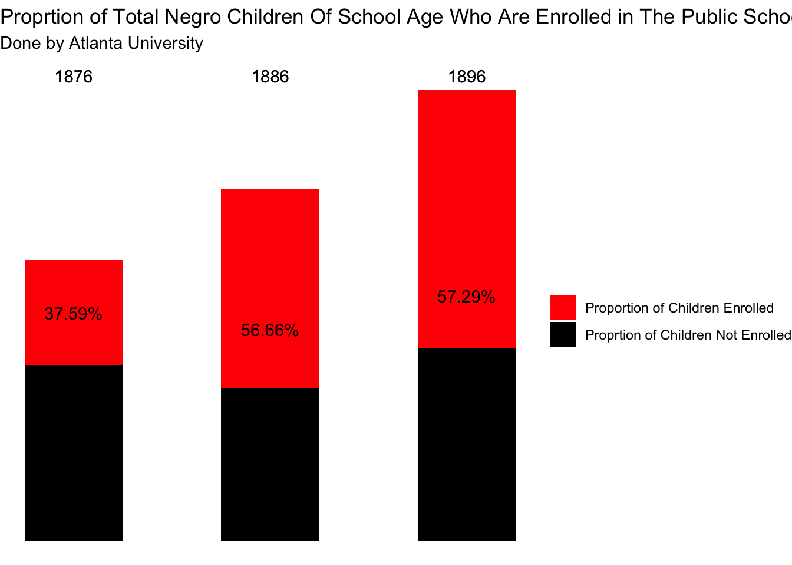
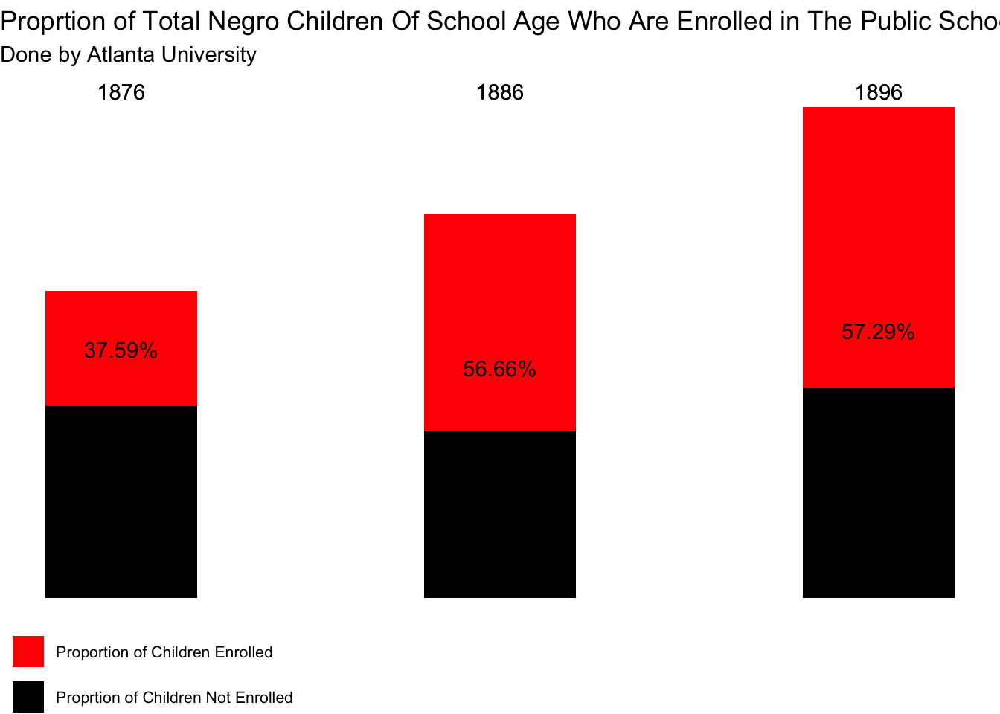
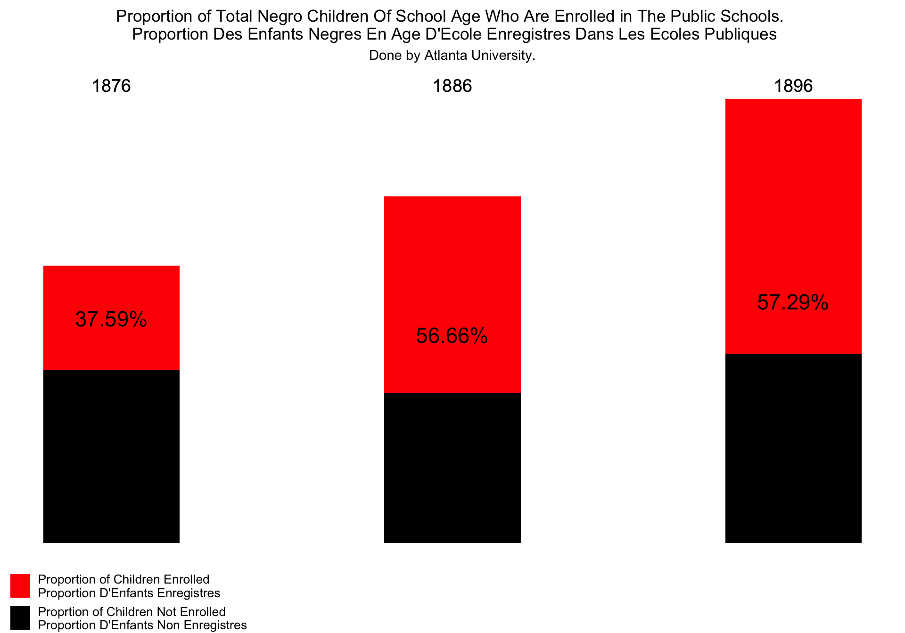
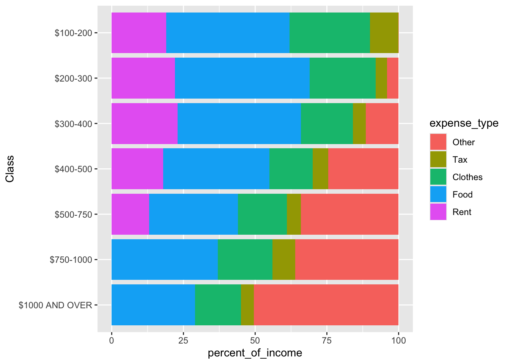
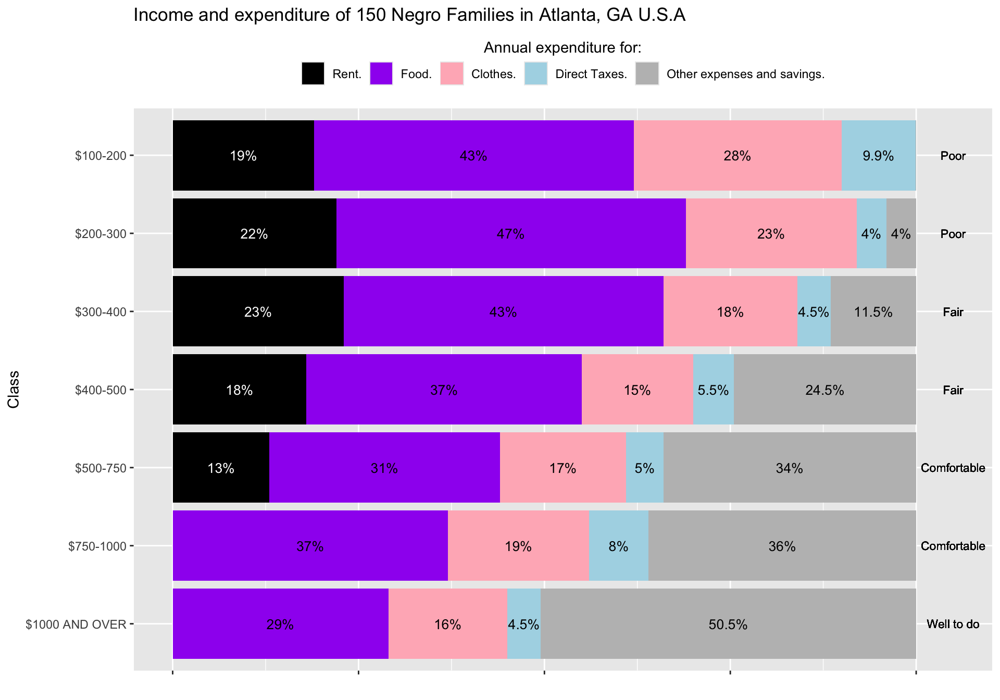

library(tidyverse)
library(glue)
library(knitr)
library(patchwork)
library(ggimage)
library(jpeg)W.E.B. Du Bois
Important
The visualizations presented in this article are original data visualizations by W.E.B. Du Bois and the captions reflect the language of the time in history.
The most prevalent type of visualizations created by W. E. B. Du Bois are bar charts, so the activities will focus on recreating the following, seemingly simple, bar charts.


In the following two activities, we will recreate these visualizations using R and the following packages:
Activity 1 - Enrollment in Public Schools
The goal of the this activity is to reproduce the visualization shown in Figure 1 (a), which displays the percentages of school aged Black children who are and are not enrolled public schools in the years 1876, 1886, and 1896.
We will break down the task of reproducing the visualization, starting with ggplot2 defaults and customizing a little bit at each step until we reach something very similar (though not a perfect replica) of the original visualization.
- Create a data frame called
public_schoolwith the relevant data. This data frame should have three columns:enrolled,year, andpercent, wherepercentis given as a number between 0 to 100.
public_school = tibble(
enrolled = c("N", "Y", "N", "Y", "N", "Y"),
year= c(1876, 1876, 1886, 1886, 1896, 1896),
percent = c(62.41, 37.59, 43.34,56.66, 42.71, 57.29))
public_school <- public_school %>%
mutate(enrolled = factor(enrolled, levels = c("Y", "N")))
levels(public_school$enrolled)[1] "Y" "N"public_school# A tibble: 6 × 3
enrolled year percent
<fct> <dbl> <dbl>
1 N 1876 62.4
2 Y 1876 37.6
3 N 1886 43.3
4 Y 1886 56.7
5 N 1896 42.7
6 Y 1896 57.3
- Create a stacked bar chart where year is on the x-axis and percent enrolled is on the y-axis. Once you do, compare the plot you made to the original visualization in Figure 1 (a) and make a list of all of updates you will need to make to this plot to make it look more like for a complete reproduction.
ggplot(public_school,aes(x = year, y = percent, fill = enrolled)) +
geom_bar(stat = "identity") 
Changes I have to make are fixing the x axis, changing the order of enrolled and not enrolled, putting the years on top of the plot.
- Update the colors on the plot to match the inspiration figure. Also make sure that the order in which the colors show up in the bars as well as the legend labels match. Note: For this task you can either use red and black colors, or use an additional piece of software (e.g., Digital Color Meter on a Mac) to match the exact colors.
ggplot(public_school,aes(x = year, y = percent, fill = enrolled)) +
geom_bar(stat = "identity") +
scale_x_continuous(limits = c(1870, 1902), breaks = c(1876, 1886, 1896)) +
scale_fill_manual(values = c("red", "black"), labels = c("Proportion of Children Enrolled", "Proprtion of Children Not Enrolled")) +
labs(title = "Proprtion of Total Negro Children Of School Age Who Are Enrolled in The Public Schools",
subtitle = "Done by Atlanta University",
fill = "")
- Place the percentages of “yes”s in the red portions of the bars and remove all axis elements by setting
theme_void(). Hint: First calculate where on the y-axis the annotation should be placed and store those values in the data as a new column.
public_school <- public_school %>%
mutate(annotate = c(NA, 81, NA, 73, NA, 69))
ggplot(public_school, aes(x = year, y = percent, fill = enrolled)) +
geom_bar(stat = "identity") +
geom_text(aes(label = paste0(as.character(percent), "%"), x = year, y = annotate)) +
scale_x_continuous(limits = c(1870, 1902), breaks = c(1876, 1886, 1896)) +
scale_fill_manual(values = c("red", "black"), labels = c("Proportion of Children Enrolled", "Proprtion of Children Not Enrolled")) +
labs(title = "Proprtion of Total Negro Children Of School Age Who Are Enrolled in The Public Schools",
subtitle = "Done by Atlanta University",
fill = "") +
theme_void()Warning: Removed 3 rows containing missing values or values outside the scale range
(`geom_text()`).
- Add back the x-axis labels, but place them on top of the bars.
ggplot(public_school, aes(x = year, y = percent, fill = enrolled)) +
geom_bar(stat = "identity") +
geom_text(aes(label = paste0(as.character(percent), "%"), x = year, y = annotate)) +
geom_text(aes(label = as.character(year), x = year, y = 105)) +
scale_fill_manual(values = c("red", "black"), labels = c("Proportion of Children Enrolled", "Proprtion of Children Not Enrolled")) +
labs(title = "Proprtion of Total Negro Children Of School Age Who Are Enrolled in The Public Schools",
subtitle = "Done by Atlanta University",
x = "",
fill = "") +
theme_void() Warning: Removed 3 rows containing missing values or values outside the scale range
(`geom_text()`).
- Make the bars skinnier and increase the white space between them.
ggplot(public_school, aes(x = year, y = percent, fill = enrolled)) +
geom_bar(stat = "identity", width = 5) +
geom_text(aes(label = paste0(as.character(percent), "%"), x = year, y = annotate)) +
geom_text(aes(label = as.character(year), x = year, y = 105)) +
scale_fill_manual(values = c("red", "black"), labels = c("Proportion of Children Enrolled", "Proprtion of Children Not Enrolled")) +
labs(title = "Proprtion of Total Negro Children Of School Age Who Are Enrolled in The Public Schools",
subtitle = "Done by Atlanta University",
x = "",
fill = "") +
theme_void() Warning: Removed 3 rows containing missing values or values outside the scale range
(`geom_text()`).
- The original visualization in Figure 1 (a) features three bars of unequal height. Presumably, this might indicate a larger population being represented, but we don’t have data on how much larger this population is. But we can eyeball that the bar for 1886 is roughly 25% taller than the bar for 1876 and the bar for 1896 is roughly 60% taller. Recreate the visualization with unequal bar heights using these rough estimates.
public_school <- public_school %>%
mutate(annotate = c(NA, 81, NA, 75, NA, 87))
public_school <- public_school %>%
mutate(proportion = c(1, 1, 1.25, 1.25, 1.6, 1.6),
scaled_percent = percent * proportion)
ggplot(public_school, aes(x = year, y = scaled_percent, fill = enrolled)) +
geom_bar(stat = "identity", width = 5) +
geom_text(aes(label = paste0(as.character(percent), "%"), x = year, y = annotate)) +
geom_text(aes(label = as.character(year), x = year, y = 165)) +
scale_fill_manual(values = c("red", "black"), labels = c("Proportion of Children Enrolled", "Proprtion of Children Not Enrolled")) +
labs(title = "Proprtion of Total Negro Children Of School Age Who Are Enrolled in The Public Schools",
subtitle = "Done by Atlanta University",
x = "",
fill = "") +
theme_void() Warning: Removed 3 rows containing missing values or values outside the scale range
(`geom_text()`).
- Move the legend underneath the first bar and reduce the size of the legend key.
ggplot(public_school, aes(x = year, y = scaled_percent, fill = enrolled)) +
geom_bar(stat = "identity", width = 4) +
geom_text(aes(label = paste0(as.character(percent), "%"), x = year, y = annotate)) +
geom_text(aes(label = as.character(year), x = year, y = 165)) +
scale_fill_manual(values = c("red", "black"), labels = c("Proportion of Children Enrolled", "Proprtion of Children Not Enrolled")) +
labs(title = "Proprtion of Total Negro Children Of School Age Who Are Enrolled in The Public Schools",
subtitle = "Done by Atlanta University",
x = "",
fill = "") +
theme_void() +
theme(legend.position = "bottom",
legend.justification = "left",
legend.text = element_text(size = 8)) +
guides(fill = guide_legend(ncol = 1))Warning: Removed 3 rows containing missing values or values outside the scale range
(`geom_text()`).
- Adjust the size and aspect ratio of the figure.
g <- ggplot(public_school, aes(x = year, y = scaled_percent, fill = enrolled)) +
geom_bar(stat = "identity", width = 4) +
geom_text(aes(label = paste0(as.character(percent), "%"), x = year, y = annotate), size = 6) +
geom_text(aes(label = as.character(year), x = year, y = 165), size = 5) +
scale_fill_manual(values = c("red", "black"), labels = c("Proportion of Children Enrolled \nProportion D'Enfants Enregistres", "Proprtion of Children Not Enrolled \nProportion D'Enfants Non Enregistres")) +
labs(title = "Proportion of Total Negro Children Of School Age Who Are Enrolled in The Public Schools. \n Proportion Des Enfants Negres En Age D'Ecole Enregistres Dans Les Ecoles Publiques",
subtitle = "Done by Atlanta University.",
x = "",
fill = "") +
theme_void() +
theme(legend.position = "bottom",
legend.justification = "left",
legend.text = element_text(size = 10),
plot.title = element_text(hjust = 0.5),
plot.subtitle = element_text(hjust = 0.5),
plot.margin = margin(t = 2, r = 2, b = 2, l = 2, unit = "pt")) +
guides(fill = guide_legend(ncol = 1))
gWarning: Removed 3 rows containing missing values or values outside the scale range
(`geom_text()`).
- Change the background of the plot to match the background of the original visualization in Figure 1 (a). Hint: Look for an image of a “parchment paper” on a free image site like Pixabay (https://pixabay.com) and place the image in the background of the plot.
url <- "https://cdn.pixabay.com/photo/2015/12/03/08/50/paper-1074131_1280.jpg"
ggbackground(g, url)Warning: `aes_()` was deprecated in ggplot2 3.0.0.
ℹ Please use tidy evaluation idioms with `aes()`
ℹ The deprecated feature was likely used in the ggimage package.
Please report the issue at <https://github.com/YuLab-SMU/ggimage/issues>.Warning: Removed 3 rows containing missing values or values outside the scale range
(`geom_text()`).
- What other updates would you make to match the original visualization in Figure 1 (a)?
I would make the bars start at the same top height instead of at y = 0. I could also make the legend more accurate.
Activity 2 - Income expenditures
The second activity focuses on recreating Figure 1 (b), which was originally created using ink and watercolors. It also stands out due to the use of photographs at the top of the graph. The visualization shows family budgets split by income classes for 150 families in Georgia.
- Discuss the following questions with your neighbor.
- What is the topic of the graph?
- What do you observe from the graph?
- What questions do you have after viewing this graph? What do you want to learn more about?
- Read the data file
data/income.csvasincome_wide.Then, we dive into the reproduction exercises, using the following dataset.
#reading in data
income_wide <- read_csv("data/income.csv")Rows: 7 Columns: 7
── Column specification ────────────────────────────────────────────────────────
Delimiter: ","
chr (1): Class
dbl (6): Average_Income, Rent, Food, Clothes, Tax, Other
ℹ Use `spec()` to retrieve the full column specification for this data.
ℹ Specify the column types or set `show_col_types = FALSE` to quiet this message.income_wide# A tibble: 7 × 7
Class Average_Income Rent Food Clothes Tax Other
<chr> <dbl> <dbl> <dbl> <dbl> <dbl> <dbl>
1 $100-200 139. 19 43 28 9.9 0.1
2 $200-300 249. 22 47 23 4 4
3 $300-400 336. 23 43 18 4.5 11.5
4 $400-500 434. 18 37 15 5.5 24.5
5 $500-750 547 13 31 17 5 34
6 $750-1000 880 0 37 19 8 36
7 $1000 AND OVER 1125 0 29 16 4.5 50.5- Create the segmented bar plot. Hint: You will first need to pivot your data longer.
income_wide_longer <- income_wide %>%
pivot_longer(
cols = c(Rent, Food, Clothes, Tax, Other), # must use a selection helper
names_to = "expense_type",
values_to = "percent_of_income"
)
income_wide_longer <- income_wide_longer %>%
mutate(Class = fct_relevel(Class, "$1000 AND OVER", "$750-1000", "$500-750", "$400-500","$300-400", "$200-300","$100-200"),
expense_type = fct_relevel(expense_type, "Other", "Tax", "Clothes", "Food", "Rent"),
annotate = if_else(percent_of_income < 0.7, "", paste0(percent_of_income, "%")),
color = if_else(expense_type == "Rent", "white", "black"),
labels = case_when(Class == "$100-200" ~ "Poor",
Class == "$200-300" ~ "Poor",
Class == "$300-400" ~ "Fair",
Class == "$400-500" ~ "Fair",
Class == "$500-750" ~ "Comfortable",
Class == "$750-1000" ~ "Comfortable",
Class == "$1000 AND OVER" ~ "Well to do"))
ggplot(income_wide_longer, aes(x = percent_of_income, y = Class, fill = expense_type)) +
geom_bar(stat = "identity")
- Add annotations that show the percentages associated with each of the segments.
ggplot(income_wide_longer, aes(x = percent_of_income, y = Class, fill = expense_type)) +
geom_bar(stat = "identity") +
geom_text(
aes(label = annotate),
position = position_stack(vjust = 0.5),
size = 2)- Update the color palette and legend to match the original Du Bois visualization.
ggplot(income_wide_longer, aes(x = percent_of_income, y = Class, fill = expense_type)) +
geom_bar(stat = "identity") +
geom_text(
aes(label = annotate, color = color),
position = position_stack(vjust = 0.5),
size = 2) +
scale_color_identity() +
scale_fill_manual(values = c("gray", "lightblue", "lightpink", "purple", "black"))
- Re-position the legend and match it, as closely as you can, to the original visualization.
ggplot(income_wide_longer, aes(x = percent_of_income, y = Class, fill = expense_type)) +
geom_bar(stat = "identity") +
geom_text(
aes(label = annotate, color = color),
position = position_stack(vjust = 0.5),
size = 3.5) +
geom_text(aes(label = labels, y = Class, x = 105), size = 3) +
scale_color_identity() +
scale_fill_manual(values = c("gray", "lightblue", "lightpink", "purple", "black"), labels = c("Other expenses and savings.", "Direct Taxes.", "Clothes.", "Food.", "Rent.")) +
theme(legend.position = "top",
legend.title.position = "top",
legend.key.justification = "center",
legend.title.align = 0.5,
axis.text.x = element_blank()
) +
guides(fill = guide_legend(reverse= TRUE)) +
labs(fill = "Annual expenditure for:",
title = "Income and expenditure of 150 Negro Families in Atlanta, GA U.S.A",
x = "") 
- What other updates would you make to match the original visualization in Figure 1 (b)?
Some other updates I could make are fixing the labels for Poor, Fair Comfortable and Well to Do so they are closer to the original visualization. I could also make the y axis look closer to the visualization by trying to add the actual average of each group.